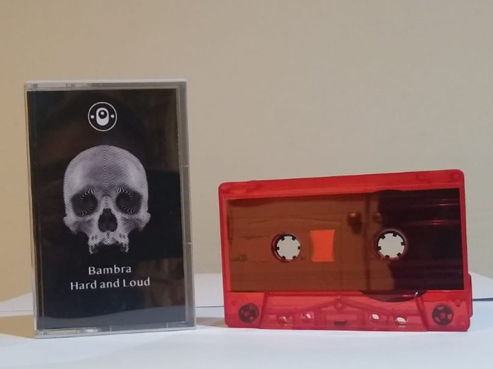

MOVING_IMAGES (VIDEOS)
Moving image transmissions from the Bambra visual archive. Music videos, experimental imagery and audiovisual recordings associated with the Nottingham electronic music project.
VIDEO_LOG_001 // BAMBRA - GRIMY (OFFICIAL VIDEO)
[ OPEN ORIGINAL YOUTUBE TRANSMISSION ]VIDEO_LOG_002 // ARCHIVE TRANSMISSION
[ OPEN ORIGINAL YOUTUBE TRANSMISSION ]VIDEO_LOG_003 // ARCHIVE TRANSMISSION
[ OPEN ORIGINAL YOUTUBE TRANSMISSION ]VIDEO_LOG_004 // ARCHIVE TRANSMISSION
[ OPEN ORIGINAL YOUTUBE TRANSMISSION ]VIDEO_LOG_005 // ARCHIVE TRANSMISSION
[ OPEN ORIGINAL YOUTUBE TRANSMISSION ]STILLS (PHOTOGRAPHY ARCHIVE)

HARD_AND_LOUD //
VISUAL_ARCHIVE_001

HARD_AND_LOUD //
VISUAL_ARCHIVE_002
[ VIDEO_ARRAY: 05 TRANSMISSIONS LINKED ]
[ IMAGE_ARRAY: 02 VISUAL RECORDS ]
[ SOURCE: YOUTUBE / LOCAL ARCHIVE ]
[ STATUS: VISUAL SIGNAL ACTIVE ]
[ IMAGE_ARRAY: 02 VISUAL RECORDS ]
[ SOURCE: YOUTUBE / LOCAL ARCHIVE ]
[ STATUS: VISUAL SIGNAL ACTIVE ]